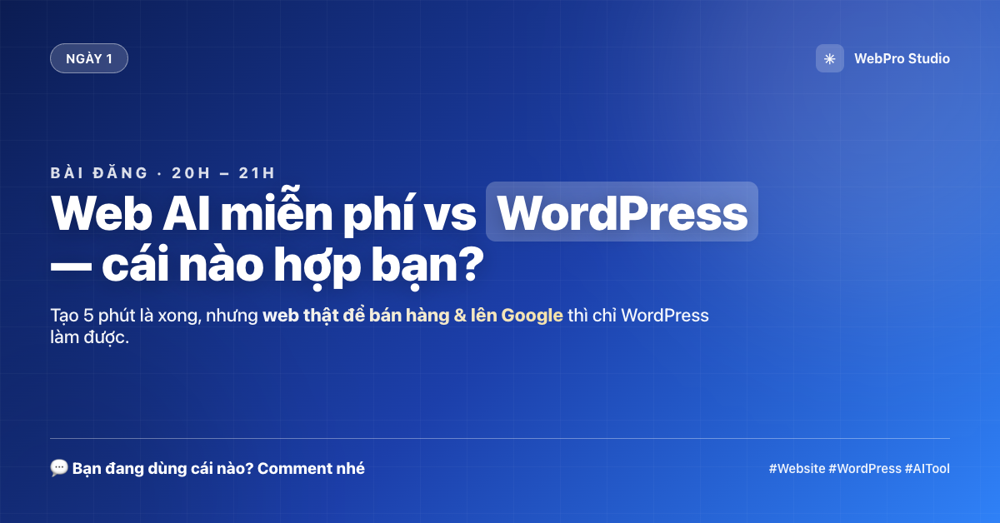
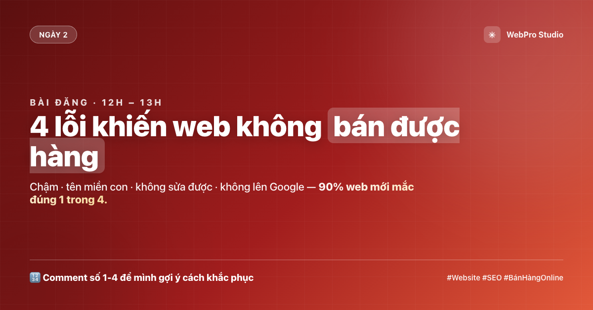
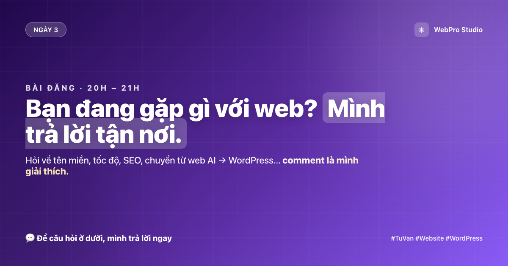
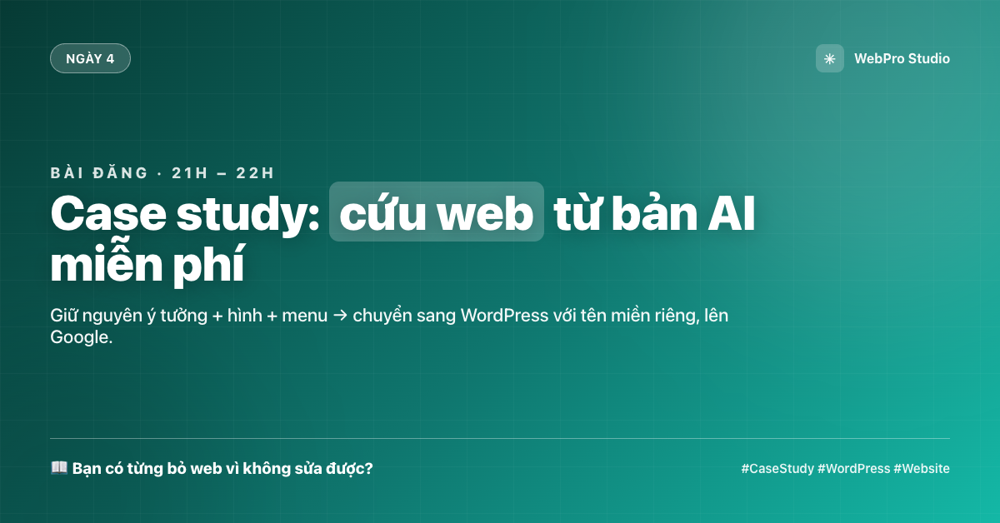
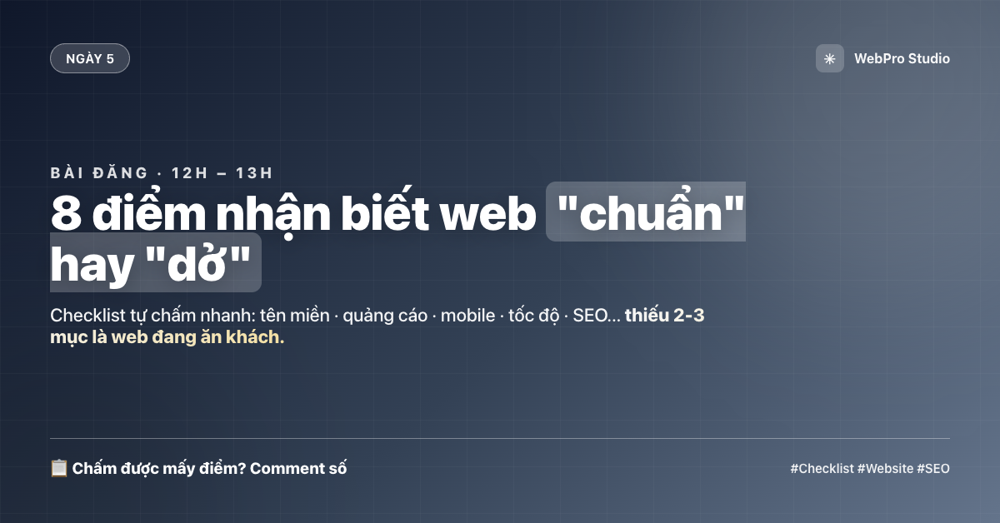
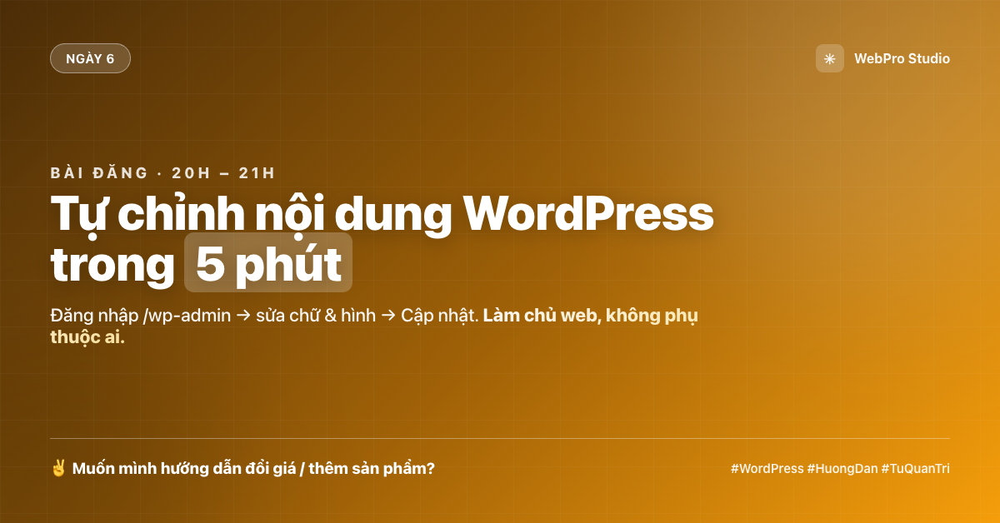
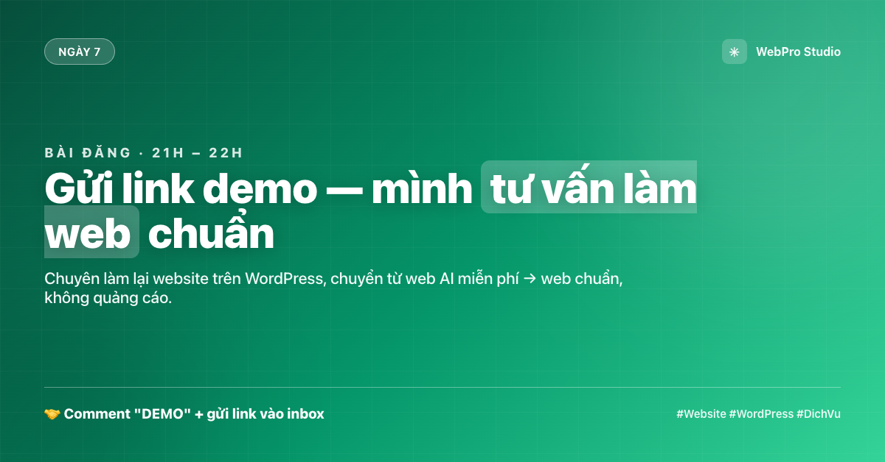

Bấm vào tab bên dưới để chuyển nhanh: Kế hoạch · Bài đăng nhóm · Quy trình nội bộ.
Bấm vào số để xem từng bước. Mỗi bước đều có bảng, mẫu câu, checklist.
| # | Nền tảng & Link | Điểm nổi bật | Thích hợp cho | Ưu điểm | Nhược điểm | Đánh giá | Demo sản phẩm | |
|---|---|---|---|---|---|---|---|---|
| 1 | Durable ✓ durable.com | Web dịch vụ/doanh nghiệp trong 30 giây, kèm sẵn form liên hệ | Dịch vụ địa phương, cần tốc độ | Rất nhanh; form liên hệ có sẵn; đơn giản cho người không rành kỹ thuật | Bản free rất hạn chế; chỉ domain phụ; ít quyền tuỳ chỉnh | — | ||
| 2 | Lindo AI lindo.ai | Nhập 1 câu lệnh (prompt) ra ngay Landing Page hiện đại | Landing Page, giới thiệu sản phẩm | Giao diện hiện đại; dựng landing cực nhanh; không cần code | Có badge quảng cáo Lino; giới hạn traffic tháng; ít tùy chỉnh nâng cao | — | ||
| 3 | Wix AI wix.com | AI dựng khung chuẩn, kết hợp trình kéo-thả linh hoạt | Phổ thông, cá nhân, cửa hàng nhỏ | Cộng đồng lớn; kéo-thả mượt; nhiều mẫu & app | Dính banner quảng cáo; subdomain; site thường chậm hơn | — | ||
| 4 | Framer ✓ framer.com | Giao diện thời thượng, hiệu ứng chuyển động (animation) cực mượt | Nhận diện thương hiệu, portfolio | Đẹp nhất nhóm; animation mượt; dựng portfolio/thương hiệu rất tốt | Subdomain *.framer.website; không xuất code; cần học một chút | — | ||
| 5 | CodeDesign.ai codedesign.ai | Layout chuẩn chỉnh như thiết kế thủ công, cho can thiệp sâu vào UI | Designer, người thích tuỳ biến | Kiểm soát layout tốt; can thiệp sâu UI; ra code sạch | Không custom domain; giới hạn export; đòi hỏi kỹ năng thiết kế | — | ||
| 6 | Dora AI dora.run | Website tích hợp hiệu ứng 3D trực quan, gây ấn tượng mạnh | Chiến dịch sáng tạo, cần hút view | Hiệu ứng 3D wow; tạo ấn tượng mạnh; hợp chiến dịch/landing | Hạn chế tuỳ chỉnh; khó xuất bản; nặng & chậm hơn; cần kỹ năng | — | ||
| 7 | ZipWP zipwp.com | Tạo web WordPress hoàn thiện bài viết, hình ảnh chỉ trong 60 giây | Dân làm WordPress, developer | Ra WordPress thật; dựng nhanh; dễ đưa vào quy trình WP của bạn | Giới hạn 3 web/tháng; bản nháp tự xoá sau 24h nếu không cài host | — | ||
| 8 | Softr 💻 softr.io | Biến cơ sở dữ liệu (Google Sheets/Airtable) thành website động | Danh mục sản phẩm, cổng thông tin | Nối bảng tính/web động; không cần code; hợp danh mục, cổng thông tin | Giới hạn số dòng dữ liệu; tính năng nâng cao cần trả phí | — | ||
| 9 | Base44 base44.com | Dùng AI tạo Web App, thiết lập luồng dữ liệu và phân quyền | Hệ thống quản lý, luồng dữ liệu | Làm web app thật sự; quản lý luồng dữ liệu & phân quyền | Cần tư duy hệ thống; giới hạn tài nguyên vận hành | — | ||
| 10 | Lovable ✓ lovable.dev | Viết text để AI tự động code ra phần mềm (React, Tailwind) | Lập trình viên, dự án tính toán | Code ra sản phẩm thật (React/Tailwind); rất mạnh & linh hoạt | Giới hạn số prompt/tháng; cần chút nền tảng để chạy app | — | ||
| 11 | B12 ✓ b12.io | Tối ưu cho web dịch vụ, tích hợp sẵn form đặt lịch, hoá đơn, email | Doanh nghiệp nhỏ, dịch vụ B2B | Chuyên cho web dịch vụ; form đặt lịch/hoá đơn/email có sẵn | Bản free chỉ xem nháp; muốn chạy phải trả phí | — | ||
| 12 | Relume ✓ relume.ai | AI tạo sitemap và wireframe siêu tốc với nội dung copywriting chuẩn | UI/UX designer, cấu trúc web | Wireframe/sitemap siêu nhanh; copy chuẩn; hợp designer | Giới hạn số project; cần kết hợp Figma/Webflow để xuất bản | — | ||
| 13 | 10Web 🔒 10web.io | Tạo ra site WordPress luôn, gần với dịch vụ làm WP của bạn | Dân làm web, cầu nối WordPress | Ra web WordPress luôn; dễ đưa vào quy trình làm WP của bạn | Free giới hạn tính năng/lưu trữ; nội bộ — không chia sẻ cho khách | — | ||
| 14 | Hostinger Horizons 💳 hostinger.com | AI làm nhanh, rất dễ, giao diện đẹp | Người mới, khách cần web "thật" | Cực dễ; hosting + AI tích hợp; giao diện đẹp; phù hợp người mới | Có phí để dùng "thật"; free giới hạn publish/domain | — | ||
| 15 | GoDaddy Airo godaddy.com | AI + marketing tích hợp | Tham khảo, ít dùng | AI + marketing tích hợp; dùng nhanh | Free giới hạn; đẩy lên gói trả phí | — |
🟢 ✓ = đã tự đăng ký & dùng thử, chấp nhận được · 💻 = bên tạo web app · 💳 = cần trả phí để dùng thật · 🔒 = dùng nội bộ, không chia sẻ cho khách.
⭐ Điểm (0–5) là đánh giá chủ quan của mình: Giao diện (đẹp/không đại trà), Dễ dùng (ai cũng làm được), Tốc độ (tải nhanh), Tiềm năng (đáng đưa vào content/dịch vụ). Trước khi dùng, tự kiểm chứng lại.
📌 Demo sản phẩm: đang để trống (—), chờ bạn gửi link demo thật của từng nền tảng để mình điền vào.
| Nhóm | Cụ thể | Ghi chú |
|---|---|---|
| Kênh liên hệ | Fanpage có nút "Gửi tin nhắn" | Bật Messenger tự động |
| Nhận link | Google Form "Gửi link demo" | Họ tên, SĐT/Zalo, Link demo, Loại web |
| Lưu khách | Google Sheet / Airtable | Ngày, Tên, SĐT, Link, Nguồn, Trạng thái, Ghi chú |
| Kỹ thuật | Hosting WordPress | Hostinger/Namecheap/Cloudways |
| Kỹ thuật | Theme + builder | Elementor / Kadence / GeneratePress |
| Liên hệ | Zalo / Messenger / Email template | Soạn sẵn ở bước 7 |
| Đo lường | Pixel + UTM | Biết bài nào ra khách |
| Kiểu | Mục đích |
|---|---|
| WOW | "Tạo web 5 phút, miễn phí" |
| So sánh | "Top 5 web AI, cái nào OK" |
| Nút thắt | "4 giới hạn của web AI free" |
| Dịch vụ | "Làm lại web thành WordPress" |
Khung giờ vàng: 12h–13h & 20h–22h.
| Ngày | Kiểu | Chủ đề |
|---|---|---|
| T2 | WOW | 5 phút có web |
| T3 | So sánh | Top 5 web AI |
| T4 | Nút thắt | 4 cái bẫy |
| T5 | WOW | Demo 1 ngành |
| T6 | So sánh | Web AI vs WP |
| T7 | Nút thắt | Không lên Google |
| CN | Dịch vụ | Nhận làm web |
| Kênh | Ghi chú |
|---|---|
| 1. Messenger | Khách gửi link trực tiếp — chính, nhiều nhất |
| 2. Google Form | Link trong bài/comment — gọn, tự lưu Sheet |
| 3. Zalo | Khách đã có số — chốt nhanh |
| 4. Comment | Link dưới bài — nhắn riêng tránh spam |
Google Form: Họ tên * | SĐT/Zalo * | Link demo * | Ngành nghề | Nguồn
Bảng lead: Ngày | Tên | SĐT/Zalo | Link demo | Nguồn | Ngành | Trạng thái | Ghi chú
| Gói | Phù hợp | Nội dung | Giá tham khảo |
|---|---|---|---|
| Cơ bản | Chỉ giới thiệu | 5-7 trang, responsive, form liên hệ, bản đồ | 1,5 – 2,5 tr |
| Tiêu chuẩn | Cần bán hàng | Trang giới thiệu + danh mục, SEO, quản trị | 3,5 – 5,5 tr |
| Nâng cao | Bán online | Giỏ hàng, đặt lịch, SEO sâu, đào tạo, hỗ trợ 1 tháng | 7 – 12 tr |
| Bảo trì/tháng | Đã có web | Update, sao lưu, sửa nội dung, theo dõi | 300 – 800 ngàn |
| Tiêu chí | Web AI miễn phí | Web WordPress (bạn làm) |
|---|---|---|
| Tên miền | xxx.tool.ai (con) | Domain riêng |
| Quảng cáo | Dính badge/nền tảng | Sạch |
| Chỉnh sửa | Bị khoá/khó | Tự đăng nhập & sửa |
| SEO | Yếu | Bài bản, lên Google |
| Mở rộng | Bị giới hạn | Cài plugin thoải mái |
| Tuần | Việc chính |
|---|---|
| T1 | Lập fanpage + Form/Sheet. Đăng bộ WOW/So sánh. Tự tạo thử 5 site. |
| T2 | Đăng bài Nút thắt + Dịch vụ. Trả lời link demo trong 24h. Chuẩn bị bảng giá & video. |
| T3 | Tăng tần suất, bắt đầu chốt hợp đồng. Làm quy trình WordPress chuẩn. |
| T4 | Tối ưu: dừng bài kém, tăng bài ra khách. Đẩy upsell bảo trì. Đo KPI. |
Bấm vào ngày để xem bài viết, rồi bấm "📋 Copy bài" để dán thẳng vào nhóm.







| Ngày | Tên | SĐT/Zalo | Link demo | Nguồn | Ngành | Trạng thái | Ghi chú |
|---|---|---|---|---|---|---|---|
| _ | _ | _ | _ | _ | _ | Mới/Đã liên hệ/Chốt/Từ chối | _ |
💡 Đặt bảng này cạnh khi trả lời inbox để không bỏ sót ai. Sau mỗi bài, chuyển toàn bộ comment/inbox lead vào bảng.
Quy trình tạo website cho khách: lấy brief → ChatGPT viết prompt → chọn tool → dán prompt → AI tạo web → chỉnh sửa → bàn giao. Đây là quy trình nội bộ, không đăng cho khách xem.
| Bước | Việc cần làm | Công cụ / Tool | Thời gian |
|---|---|---|---|
| 1. Lấy brief | Khách gửi nhu cầu: ngành, ý tưởng, target, tính năng cần (form, giá, v.v) | Messenger / Form / Zalo | ~15 phút |
| 2. Viết prompt | Dùng ChatGPT tạo prompt chi tiết để AI tạo website dựa trên brief | ChatGPT / Claude | ~20 phút |
| 3. Chọn tool AI | Dựa trên ngành & nhu cầu, chọn tool web AI phù hợp (Durable/Wix/Framer/...) | Bảng cột 1 | ~5 phút |
| 4. Tạo web | Dán prompt vào tool → AI tạo website tự động (chỉ cần 2-3 phút) | Tool web AI | ~5 phút |
| 5. Chỉnh sửa | Review & tinh chỉnh: nội dung, ảnh, bố cục, form, SEO | Tool web AI | ~30-60 phút |
| 6. Bàn giao | Test, copy link, gửi khách + hướng dẫn sửa nội dung | Messenger / Zalo | ~10 phút |
⏱️ Tổng cộng: 85-120 phút (~1.5-2 tiếng) từ brief → website sẵn dùng
[...] bằng thông tin khách (ngành, nhu cầu, tính năng).Dán prompt này vào ChatGPT, thay [...] bằng thông tin khách, rồi copy prompt hoàn chỉnh để dán vào tool web AI.
💡 Sau khi điền xong: gửi đoạn chat này cho ChatGPT → nó sẽ tạo ra một prompt ngắn gọn, hoàn chỉnh → dùng prompt đó ở bước 4.
| Bước | Công cụ / Tool | Link / Ghi chú |
|---|---|---|
| Viết prompt | ChatGPT / Claude | chatgpt.com hoặc Claude |
| Web AI - Nhanh | Durable | durable.com - Best for service biz |
| Web AI - Đẹp | Framer / Lindo | framer.com - Modern & smooth |
| Web AI - Flexibility | Wix / Webflow | wix.com - Customizable |
| Screenshot/Clone | Browser DevTools / Httrack | Lưu bản gốc tham chiếu khi cần |
| Test & Review | Mobile Simulator / PageSpeed | pagespeed.web.dev - Check tốc độ |
[TÊN / NGÀNH / TÍNH NĂNG] là ra website chuẩn. Đó chính là sức mạnh của "automation workflow".